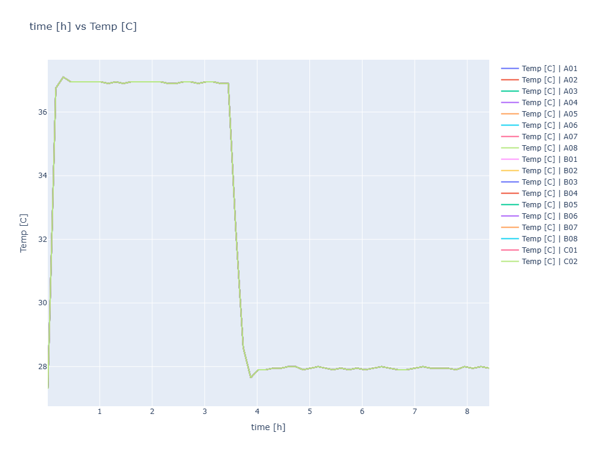
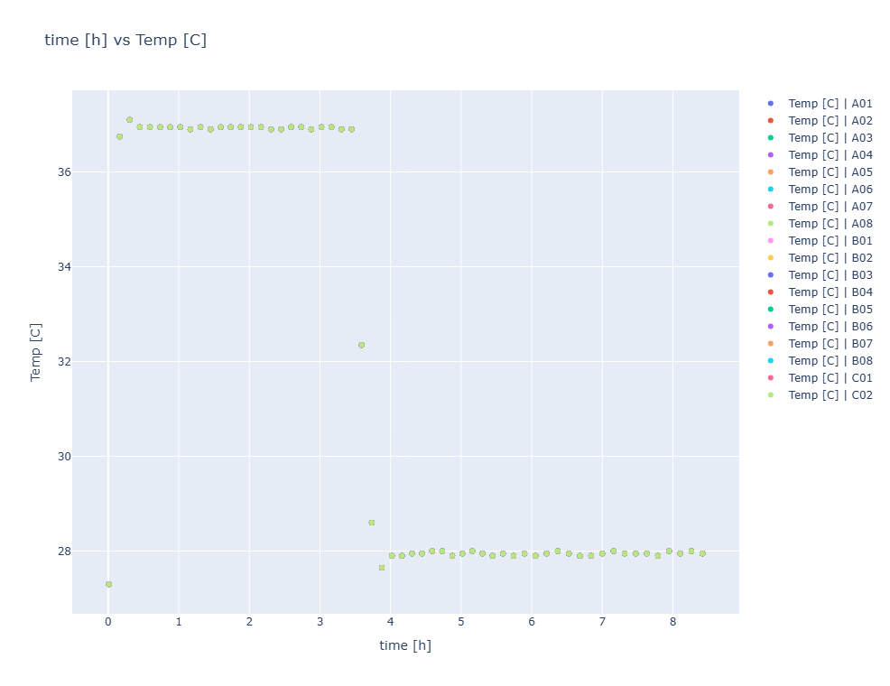
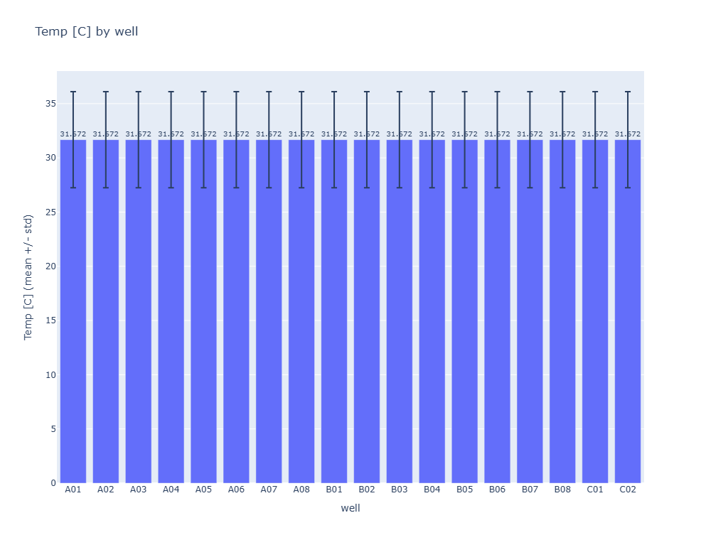
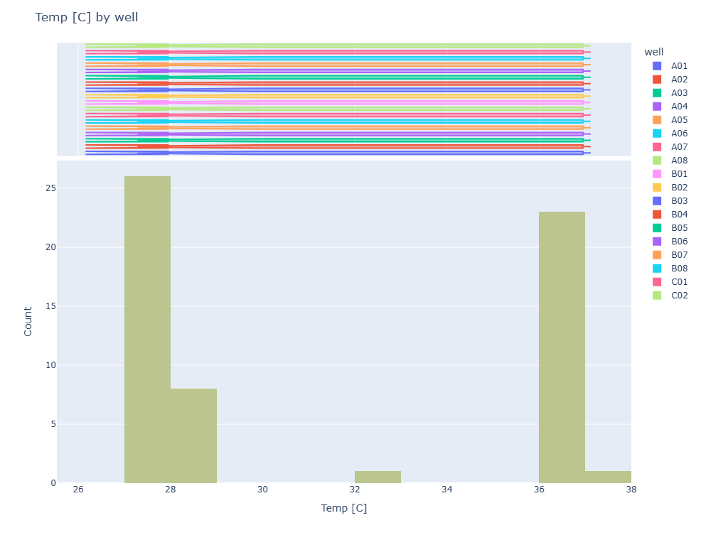
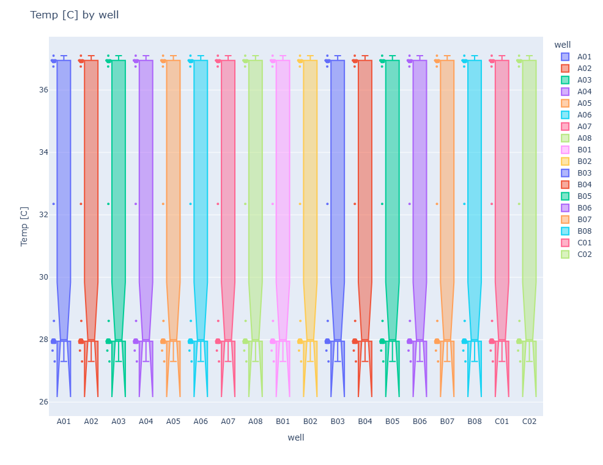
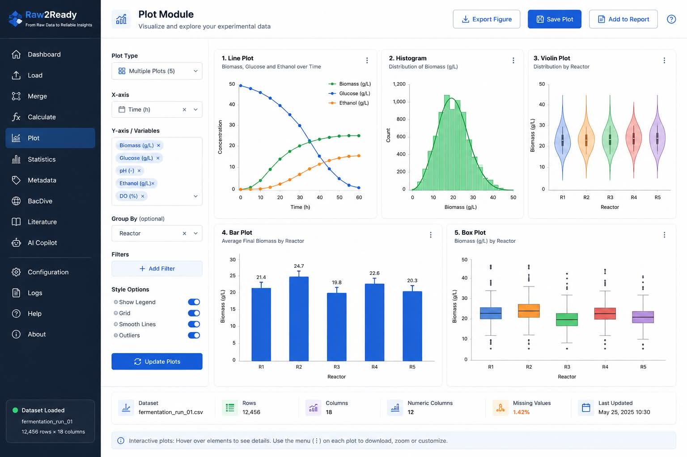

Plot Module
Interactive visualization of fermentation experiments, calculated variables and statistical results.
Overview
The Plot Module provides interactive visualization capabilities for experimental fermentation data.
Users can generate publication-quality figures directly from harmonized datasets without exporting the data to external software such as Excel, OriginPro or GraphPad Prism.
All plots are generated directly from the dataset stored in Runtime Memory, ensuring that every visualization reflects the latest preprocessing, merging and calculation operations.
Objectives
- Explore experimental trends.
- Compare fermentation variables.
- Detect abnormal behaviour.
- Produce publication-quality figures.
- Support exploratory data analysis.
- Assist AI-based interpretation.
Why Visualization Matters
Numerical tables alone rarely reveal hidden relationships within fermentation experiments.
Visual representations enable researchers to identify process trends, biological behaviour, sensor anomalies and experimental deviations much more efficiently.
- Growth dynamics
- Oxygen consumption
- Biomass accumulation
- Product formation
- Process disturbances
- Correlations between variables
Visualization transforms complex datasets into interpretable biological knowledge.
Plot Architecture
Every visualization follows the same execution pipeline.
Runtime Memory
│
▼
Variable Selection
│
▼
Plot Configuration
│
▼
Rendering Engine
│
▼
Interactive Figure
│
▼
Export
This architecture guarantees consistency across all visualization types.
Supported Plot Types
| Plot Type | Purpose |
|---|---|
| Line Plot | Time-series visualization. |
| Scatter Plot | Variable relationships. |
| Bar Chart | Category comparison. |
| Histogram | Distribution analysis. |
| Box Plot | Outlier detection. |
| Multi-Series Plot | Comparison of multiple variables. |
Visualization Workflow
Every visualization follows a structured workflow from dataset selection to interactive rendering.
Dataset
│
▼
Select Variables
│
▼
Choose Plot Type
│
▼
Configure Options
│
▼
Render Figure
│
▼
Export Image
Line Plots
Line plots are the primary visualization for fermentation experiments. They illustrate the evolution of process variables over time and are particularly useful for monitoring biomass growth, dissolved oxygen, pH, temperature and substrate consumption.
- Single-variable trends
- Time-series analysis
- Fermentation monitoring
- Growth curve visualization

Scatter Plots
Scatter plots visualize the relationship between two quantitative variables and help identify correlations, clusters and abnormal observations.
- Variable correlation
- Process relationships
- Pattern discovery
- Outlier detection

Bar Charts
Bar charts compare categorical values or summary statistics across experimental conditions.
| Use Case | Example |
|---|---|
| Average Biomass | Bioreactor Comparison |
| Maximum Product | Culture Comparison |
| Yield Values | Process Optimization |

Histograms
Histograms display the frequency distribution of numerical variables, allowing users to evaluate data spread, skewness and distribution shape.
- Normality assessment
- Distribution analysis
- Data exploration
- Quality assessment

Box Plots
Box plots summarize variable distributions while highlighting quartiles, variability and potential outliers.
- Median
- Interquartile Range
- Whiskers
- Outlier Identification

Multi-Series Plots
Multiple variables can be visualized simultaneously on the same figure, enabling direct comparison of process behaviour.
Biomass
│
Temperature
│
pH
│
Dissolved Oxygen
│
Substrate Feed
│
▼
Combined Plot
Multi-series visualizations simplify the analysis of interactions between experimental variables.
Interactive Plot Controls
The NiceGUI interface provides interactive tools for configuring every visualization.
- X-axis selection
- Y-axis selection
- Multiple variable selection
- Legend control
- Zoom and pan
- Automatic scaling
- Grid visibility
- Figure titles

Plot Customization
Raw2Ready enables users to customize generated figures before exporting them.
| Feature | Description |
|---|---|
| Titles | Custom figure titles |
| Axis Labels | Descriptive variable names |
| Legends | Automatic legend generation |
| Grid | Enable or disable background grid |
| Colors | Automatic color assignment |
| Resolution | Publication-quality export |
Runtime Memory Integration
Every visualization is generated directly from the dataset stored in Runtime Memory.
Runtime Memory
│
▼
Plot Module
│
▼
Interactive Figure
│
▼
User Interface
Because all modules share the same Runtime Memory, every generated plot always reflects the most recent preprocessing, merge and calculation operations.
Exporting Figures
Once a visualization has been generated, Raw2Ready allows users to export publication-quality figures for reports, presentations and scientific publications.
- PNG export
- SVG export
- High-resolution figures
- Transparent background support
- Automatic figure titles
- Publication-ready output

AI Integration
Generated visualizations are directly available to the Raw2Ready Multi-Agent framework.
Runtime Memory
│
▼
Plot Module
│
▼
Interactive Figures
│
▼
Data Analyst Agent
│
▼
Master Summarizer
The Data Analyst Agent uses visualization outputs together with statistical results to automatically interpret fermentation experiments and identify significant biological patterns.
Typical Visualization Workflow
Load Dataset
│
▼
Merge Datasets
│
▼
Calculate Variables
│
▼
Select Variables
│
▼
Generate Plot
│
▼
Interpret Results
│
▼
Export Figure
This workflow ensures that every figure is created using the most recent version of the experimental dataset.
Best Practices
- Label all axes clearly.
- Include informative figure titles.
- Compare variables using common scales when appropriate.
- Remove unnecessary visual clutter.
- Verify units before plotting variables.
- Inspect outliers before interpretation.
- Export high-resolution figures for publications.
Troubleshooting
| Problem | Possible Cause | Solution |
|---|---|---|
| No plot generated | No dataset loaded | Load a dataset before creating plots. |
| Empty figure | No variables selected | Select valid X and Y variables. |
| Incorrect axis | Wrong variable selection | Verify the selected columns. |
| Missing legend | Legend disabled | Enable legends in the plot settings. |
| Poor image quality | Low export resolution | Export using high-resolution settings. |
Summary
The Plot Module transforms numerical fermentation datasets into interactive visualizations that facilitate exploratory analysis, experimental interpretation and scientific communication.
By integrating seamlessly with Runtime Memory and the Multi-Agent framework, every visualization reflects the latest preprocessing, calculations and statistical analyses performed within Raw2Ready.
Effective visualization is a critical step in transforming experimental measurements into actionable biological knowledge.
Next Step
After exploring experimental data visually, users can continue with the Statistics Module to perform descriptive statistics, distribution analysis, hypothesis testing and exploratory data analysis.